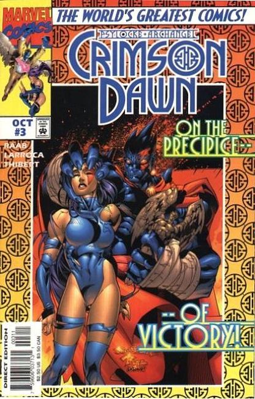
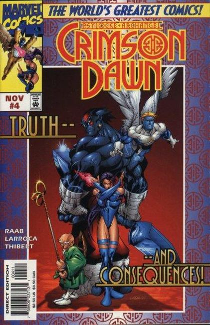

In an alley in New York's Chinatown, Kuragari murders Proctor Tar, a guardian of the barrier between Earth and the Crimson Dawn. But before Tar dies, he contacts Gomurr the Ancient, the other guardian on this plane.
In their Soho loft, Warren Worthington III and Betsy Braddock (Archangel and Psylocke) are at an impasse in their relationship. He tries to get her to open up, but since being mauled by Sabertooth and then cured in the Crimson Dawn, she has lost her sense of self, and doesn't know what to tell Warren.
In the Crimson Dawn, Kuragari assigns his Undercloaks to present a mystic ring to Psylocke. Back on Earth, a visit from Logan helps Warren cope somewhat. At the same time, Psylocke runs a holographic training program, then the Undercloaks appear.
Archangel tries to come to terms with Psylocke's personality changes, and Betsy tries to pull herself together. Kuragari begins his quest to gain Psylocke's aid in world domination.
 